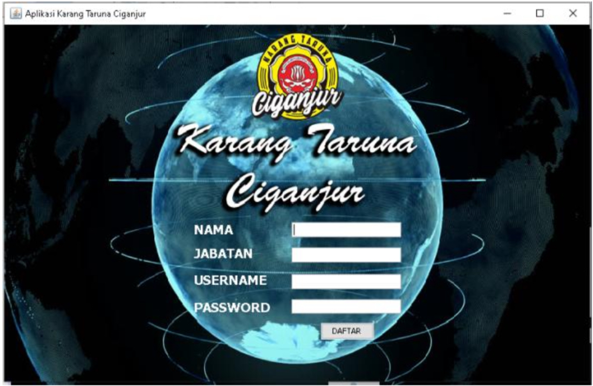
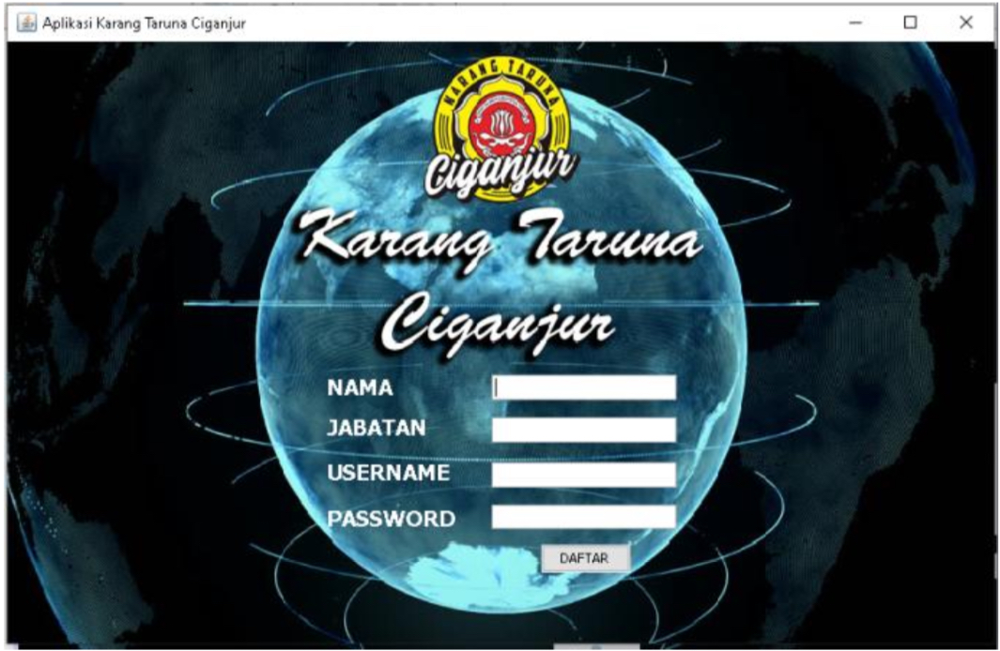

Maisarah Arfan
Admin turned Junior Programmer & Content Creator
Tentang Saya
Hai! Saya Maisarah — pernah bekerja di bidang administrasi, dan sekarang mulai fokus mengembangkan diri di dunia IT. Dulu terbiasa mengelola dokumen dan data, sekarang mulai belajar HTML, CSS, dan menikmati proses ngoding & menciptakan karya (sederhana, tapi puas rasanya).
Saya senang penasaran, suka belajar, dan selalu berusaha tumbuh lewat tantangan.
Saya juga aktif sebagai konten kreator affiliate di TikTok dan Shopee, membagikan konten produk dengan cara simpel untuk audience media sosial masa kini. Bagi saya, setiap error adalah guru, setiap “ngulik kecil” itu adalah peluang buat bilang “eh, sekarang bisa kok!”
Pendidikan
- Universitas Indraprasta PGRI (UNINDRA)
Teknik Informatika (2018/2019)
Membuat Aplikasi Sistem Karangtaruna
Keorganisasian di Karang Taruna berbasis Java (Skripsi)
Skill
- Microsoft Word
- PowerPoint
- Publisher
- Photoshop
- Excel
- Access
- HTML
- CSS
- JavaScript
- PHP Laravel
Pengalaman
- PT. Maxxima Innovative Engineering
Data Operator (2020–2022)
Mendata dan pengelolaan arsip perpustakaan, entry data mapping, editing foto dan video menggunakan Photoshop dan Adobe Premiere, serta membuat manual book. - Admin Project (2022–2024)
Menyiapkan dokumen terkait project dan dokumen penawaran.
Galeri Proyek
 

Kontak
Email: maisaraharfan@gmail.com
LinkedIn: Maisarah Arfan
Instagram: @maisarahrf
© 2025 Maisarah Arfan